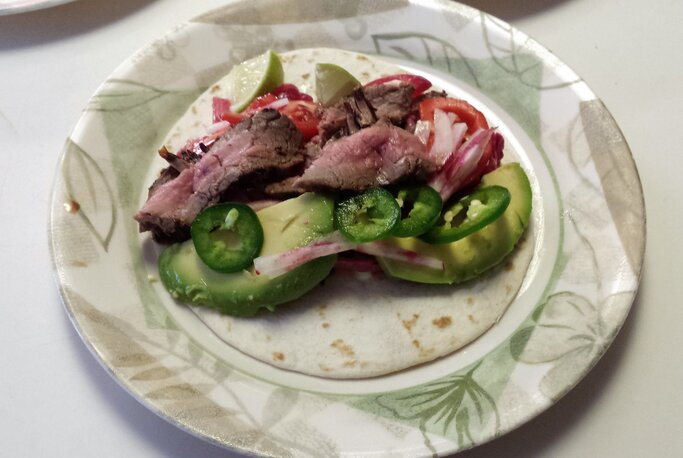

Steak Tacos

Description
Slices of grilled flank steak are served on tortillas with avocado, pickled onions, lettuce, and cabbage.
Ingredients
- 1 (3/4 pound) flank steak, trimmed
- ½ teaspoon freshly ground black pepper
- Cooking spray
- 1 tablespoon fresh lime juice
- ½ tablespoon olive oil
- 2 cloves garlic, minced
- ¼ teaspoon kosher salt
- 1 cup chopped romaine lettuce
- 1 cup chopped red cabbage
- 1 Avocado from Mexico, sliced
- 1 (16 ounce) jar pickled red onions
- Grilled scallions for garnish
- 6 (6 inch) corn tortillas
Steps
- Sprinkle steak with pepper, pressing to adhere.
- Heat grill pan over medium-high heat. Coat pan with cooking spray. Add steak to pan; grill 6 minutes on each side or until desired degree of doneness. Place steak on a cutting board; let stand 5 minutes.
- Cut steak diagonally across grain into thin slices. Mix lime juice, olive oil and garlic and drizzle over steak; sprinkle with salt.
- Heat tortillas on grill pan coated with cooking spray 20 seconds on each side or until lightly charred.
- Heat scallions on grill until lightly charred.
- Divide steak among tortillas.
- Top with romaine, red cabbage, avocado and pickled red onions.